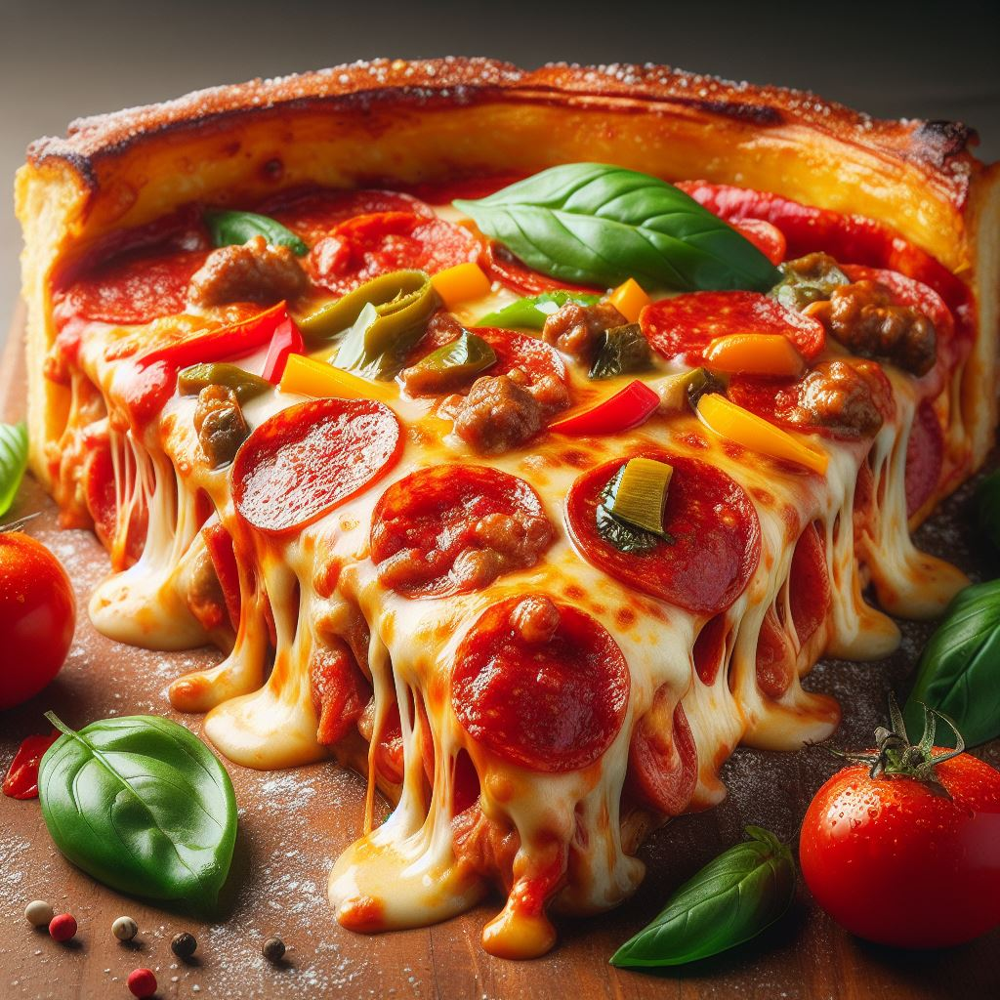

There are various types of pizza, each with its own distinct characteristics and regional variations. The classic Neapolitan pizza, originating from Naples, Italy, features a thin crust topped with San Marzano tomatoes, mozzarella cheese, fresh basil, and extra-virgin olive oil. New York-style pizza-style pizza is known for its large, foldable slices and thin, chewy crust, typically topped with tomato sauce and mozzarella cheese. Chicago-style deep-dish pizza, on the other hand, is characterized by its thick, buttery crust, layered with cheese, toppings, and tomato sauce in reverse order. Sicilian pizza is a square-shaped pie with a thick, fluffy crust, topped with tomato sauce, cheese, and various toppings. Additionally, there are specialty pizzas like the Hawaiian pizza, topped with ham and pineapple, and the Margherita pizza, featuring tomatoes, mozzarella, and basil, representing the colors of the Italian flag. These are just a few examples of the diverse world of pizza.
